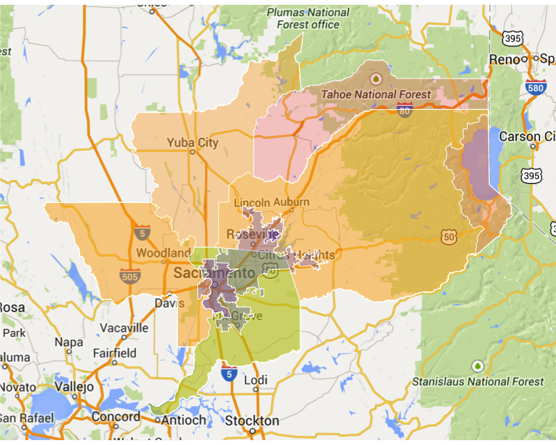
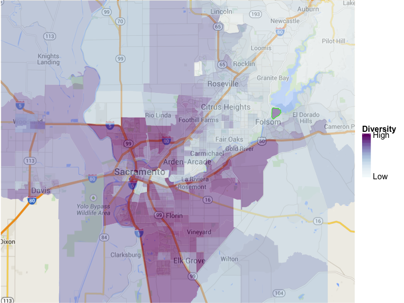
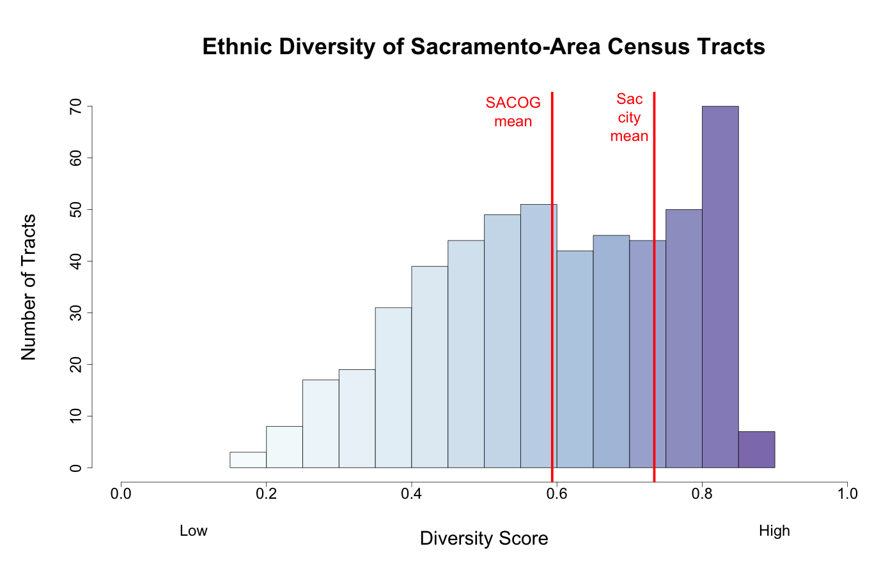
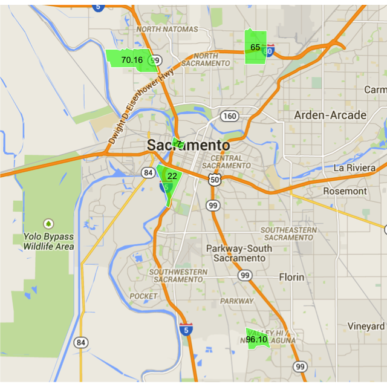
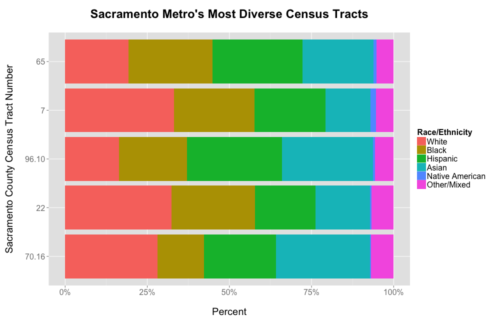
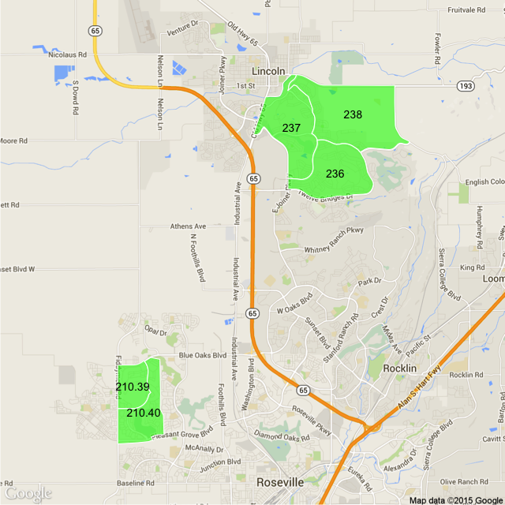
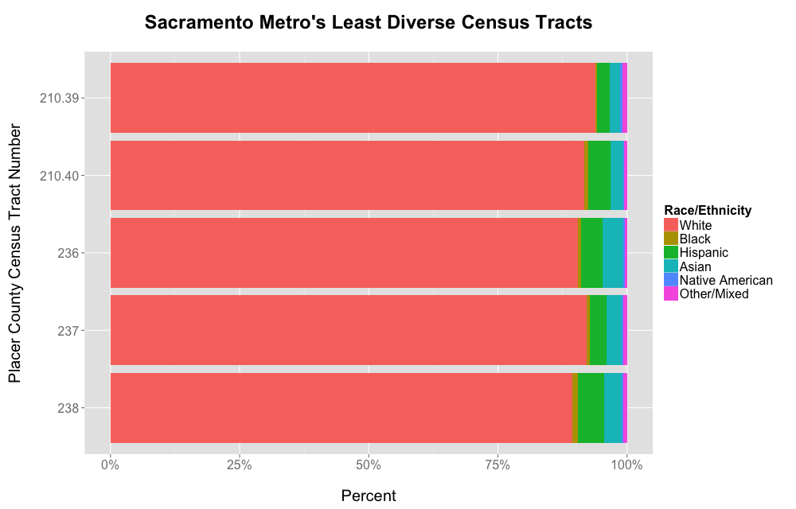

Sacramento is regularly lauded as the most ethnically diverse, or at least one of the most ethnically diverse, cities in the nation. Not just at the city level, but at the neighborhood level as well. More than any other American city, the members of Sacramento’s different racial and ethnic groups live and work together.
If, like me, you live in Sacramento, you can experience this firsthand. My immediate neighbors are black, Hispanic, white, and mixed-race black/white, and my own family is mixed Asian/white. It’s a far cry from Chicago, where I attended grad school. There, the city itself is diverse, but its neighborhoods are quite segregated.
But while the national recognition for Sacramento is deserved and appreciated, it leaves a few open questions. Among them:
- The City of Sacramento’s population is about 480,000, but the urbanized area contains more than 1.7 million people, and the Metropolitan Statistical Area (MSA) more than 2.2 million. How diverse is the metro area as a whole?
- Sacramento has a high average diversity across its census tracts, but how much variation is there among the tracts? Which are the most and least diverse tracts in the area?
- To the extent there’s variation among different areas of the metro, what causes this variation?
- How does the diversity of one’s neighborhood affect how they experience life in the metro area? How do the characteristics of diverse tracts and the people in them differ from those of less diverse tracts?
I thought I’d use these questions as an opportunity to exercise my analytical skills and play with some data, while also sharing any insight I gain with the wider world. As I think through the issues, it’s clear that coming up with any kind of answer to the questions in that final bullet point above could take a lot of work. So this post is subtitled, perhaps optimistically, Part I. We’ll see how far we get today.
WHAT IS “THE SACRAMENTO AREA”?
As with any city, the boundaries of “Sacramento” are fuzzy. Of course the municipality has a bright line boundary, as does the county. But there is a larger urbanized area around both of them (excluding a large rural part of Sacramento County), and there are various defined multi-county designations at the local and federal level, including the census-designated Metropolitan Statistical Area (MSA) and Combined Statistical Area (CSA), as well as the jurisdictional boundary of the regional Sacramento Area Council of Governments (SACOG).
Which one, if any, will we use?

A casual examination suggests that the largest of these areas, which incorporate the rural area surrounding Sacramento, are far too large for my purposes. Census MSAs and CSAs follow county boundaries, and in their effort to include everyone who could be considered a resident of the Sacramento area, they include many who could not. Certainly Tahoe residents would not think of themselves as Sacramento-area residents. And Yuba City residents, while some may commute to Sacramento, live further away from downtown Sacramento than residents of Vacaville and Lodi, which no geography considers to be part of the Sacramento area.
Of the official designations, the Urbanized Area is closest to what I think of as Sacramento, with perhaps Davis and Woodland thrown in as well. We’ll focus on census tracts roughly in the square surrounding downtown Sacramento that includes these areas.
WHAT IS “DIVERSITY”?
To measure ethnic diversity, we’ll use the Multigroup Entropy Index (aka Theil’s H or the Information Theory Index) as described in this work done for the Census Department. In a nutshell, we categorize residents into one of six broad groups: non-Hispanic white, Hispanic, black, Asian/Pacific Islander, Native American, and mixed-race/other. A perfectly diverse census tract (scoring 1.0 on the Index) would contain exactly the same number of residents from each of these groups. A perfectly homogeneous (non-diverse) census tract (scoring 0 on the Index) would contain only members of one of these groups.
In simplifying diversity to this one number, we are of course losing a lot of detail. Chinese, Indians, and Filipinos are all lumped into one group, as are Russians, Irish, and Italians, as is anyone who identifies as Hispanic, regardless of race. But this level of categorization creates an easily-understood measure that can serve as a starting point for more detailed analysis.
HOW DIVERSE ARE THE CENSUS TRACTS?
So here’s the basic map of Sacramento-area census tract diversity, using the index described above.

To give you a sense of what the colors mean, I’ve highlighted a purple tract in Folsom with a green border. This tract scores a 0.716 on the diversity index. It is 20% white, 47% black, 26% Hispanic, 2% Asian, 1% Native American, and 5% other/multiracial. As the map shows, tracts with this or a greater level of diversity are common in the Sacramento area, though this particular tract is uncommon in that it is Folsom Prison.
A review of this map confirms that much of the Sacramento area is very diverse, including such disparate areas as Rancho Cordova, Oak Park, the Florin-Vineyard area, Elk Grove, Meadowview, the Pocket, West Sacramento, Natomas, North Sacramento, and Foothill Farms. While the ethnically diverse areas certainly do include the lower-income areas of the city, they include relatively wealthy areas as well.
This diverse area is pierced, however, by a less-diverse wedge extending from Land Park and Curtis Park, through East Sacramento, and out between Interstate 80 and Highway 50 to Citrus Heights, Roseville, and Folsom, where the ethnic diversity begins to fade in all directions. The notable pockets of diversity between 80 and 50 are the western portion of Arden Arcade, Sac State, and of course Folsom Prison.
Here is another way to visualize the variation in diversity among census tracts.

This chart shows all of the census tracts in the SACOG area, sorted by diversity. It shows over 70 very highly diverse census tracts (diversity score between 0.8 and 0.9), a number of diverse census tracts down to a diversity score of about 0.5, and then a gradual decline down to the lowest diversity scores on the left. It also shows that the mean diversity score of the census tracts in the City of Sacramento is quite a bit higher than the mean over the entire SACOG area.
As the chart and the map show, there’s a lot of diversity in Sacramento’s diversity. But at this point we just have a range of numbers. Let’s translate some of these numbers into more concrete examples.
SACRAMENTO’S MOST AND LEAST DIVERSE TRACTS
The five most diverse census tracts in the Sacramento area are all located within the city limits, but are otherwise quite different from each other.


Census Tract 65, the most diverse census tract in the area, is bisected by Interstate 80. South of the interstate, the tract encompasses the north side of Del Paso Heights, including Grant High. This is one of the traditionally low-income neighborhoods of the city. North of the interstate, the tract is characterized by newer single-family developments built largely within the last 20 years. This area has been subject to the City’s inclusionary ordinance during its development, which required a certain portion of the new housing to be affordable to lower income residents. While this is all contained within one tract, the interstate divides it into two distinct neighborhoods.
Census Tract 7 is the center of downtown Sacramento, including Old Sacramento, Chinatown, the Downtown Plaza, and soon the new Kings Arena. Its diversity stems in large part from the presence of the county jail, but the tract also includes Asian retirees in Chinatown, residents of high-rise public housing, and more well-off residents of newly remodeled Old Sacramento lofts.
Census Tract 96.10 is in the Valley Hi/North Laguna area on the south side of the City, next to but not including Cosumnes River College. It is wedged between the lower-income Meadowview and Parkway areas to the north and the higher-income Elk Grove to the south. It has also been subject to the City’s inclusionary ordinance during its recent development.
Census Tract 22 is West Land Park, and combines two very different populations: the relatively well-off residents of the single family housing toward the south end of the tract, and the low-income residents of the two large public housing projects at the north end of the tract. The public housing and the neighboring industrial area are slated for redevelopment, and it will be interesting to follow the effect of this redevelopment on the area’s diversity.
Census Tract 70.16 is in North Natomas, which developed rapidly over the last 20 years, and has also been subject to the City’s inclusionary ordinance. It is largely single-family homes of varying size, with a few mixed-income apartment complexes.
The most striking feature of these five tracts is their great variety. They include the wealthy and the poor, prisoners and students, old housing and new construction. Some are physically segregated, and others are not. Three of them gained economic diversity from the City’s inclusionary ordinance, which may also have influenced their ethnic diversity. I have a thousand questions I want to ask of the data about their similarities and differences, and I hope to do that in an upcoming post.
But for now let’s move on to the area’s least diverse census tracts.


In contrast to the five most diverse census tracts in the area, the five most homogeneous tracts are located in close physical proximity to each other in suburban Roseville and Lincoln in Placer County. These five tracts are noticeably less diverse than even the tracts around them, and a quick analysis reveals a likely reason why.
Census Tracts 210.39 and 210.40 surround the Sun City Roseville, Timber Creek, and Sierra Pines golf courses. Similarly, Census Tracts 236, 237, and 238 roughly define Sun City Lincoln Hills. What unites them all, other than their proximity to a well-manicured fairway, is that they are all retirement communities developed by Del Webb. It seems that this particular vision of suburban retirement appeals to a particular group of people.
WHAT HAVE WE LEARNED?
While this post has just scratched the surface of Sacramento’s diversity, we have learned a few things. The City itself is indeed more ethnically diverse than the rest of the area on average, but there is a lot of diversity in the areas around the City. Conversely, there are areas of homogeneity within the City as well. The ethnic diversity of Sacramento’s census tracts ranges from areas of the City with almost equal populations of non-Hispanic whites, blacks, Hispanics, and Asians to very homogeneous suburban retirement communities.
These facts aren’t surprising, but the variety of Sacramento’s most diverse census tracts is. They’re geographically dispersed, and the reasons for their diversity vary. There are a thousand more questions to be asked:
- How do the most diverse tracts differ economically from the more homogeneous tracts, and from each other? Are average salaries higher or lower? What about housing prices and rents?
- Does a neighborhood’s ethnic diversity have an effect on crime rate or the types of crimes committed?
- Are educational attainment levels different for populations in diverse tracts than for populations in homogeneous tracts?
- Do residents’ attitudes vary with neighborhood diversity?
Hopefully I’ll be able to explore these questions and more in a future post.
Citation
@online{riphagen2015,
author = {Joel Riphagen},
title = {How {Diverse} {Is} {My} {Neighborhood?} {Mapping} {Ethnic}
{Diversity} in {Sacramento,} {Part} {I}},
date = {2015-02-08},
url = {https://joelrip.github.io/posts/2015-02-08-sacramento-diversity/},
langid = {en}
}